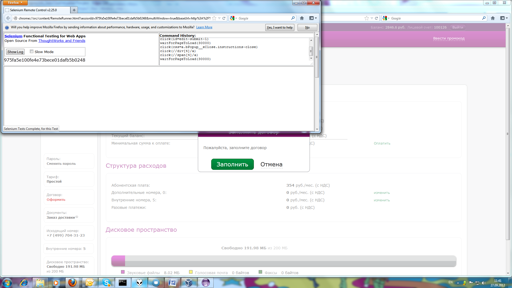

| Selenium-Command | Parameter-1 | Parameter-2 | Res.RC | Res.Selenium | Time [ms] | Calling-Class with Linenumber |
| executing createNewLoggingSelenium() |
| windowFocus | | | OK | OK | 20 | com.test.fw.SeleniumHelper#69 |
| windowMaximize | | | OK | OK | 36 | com.test.fw.SeleniumHelper#70 |
| executing getSelenium() |
| getLocation | | | OK | http://localhost:4444/selenium-server/core/Blank.html?start=true | 25 | com.test.fw.SeleniumHelper#30 |
| executing feedbackPageTest() |
| open | http://account.umagicpro-pp.lan | | OK | OK | 1314 | com.LKA_Tests.FeedbackPageTest#11 |
| waitForPageToLoad | 30000 | | OK | OK | 29 | com.LKA_Tests.FeedbackPageTest#12 |
| type | id=edit-name-1 | 100126 | OK | OK | 28 | com.LKA_Tests.FeedbackPageTest#13 |
| type | id=edit-pass-1 | 1234 | OK | OK | 17 | com.LKA_Tests.FeedbackPageTest#14 |
| click | id=edit-submit-1 | | OK | OK | 69 | com.LKA_Tests.FeedbackPageTest#15 |
| waitForPageToLoad | 30000 | | OK | OK | 3801 | com.LKA_Tests.FeedbackPageTest#16 |
| click | css=a.bPopup__eClose.instructions-close | | OK | OK | 19 | com.LKA_Tests.FeedbackPageTest#18 |
| click | //div[4]/a | | OK | OK | 40 | com.LKA_Tests.FeedbackPageTest#19 |
| click | //span[4]/a | | OK | OK | 76 | com.LKA_Tests.FeedbackPageTest#20 |

automaticErrorScreenshot2012-09-27_11-41.png | 605 | com.LKA_Tests.FeedbackPageTest#21 |
| waitForPageToLoad | 30000 | | ERROR | com.thoughtworks.selenium.SeleniumException - Timed out after 30000ms | 30619 | com.LKA_Tests.FeedbackPageTest#21 |
| executing dismissSelenium() |
| close | | | OK | OK | 88 | com.test.fw.SeleniumHelper#79 |
{kind=link}